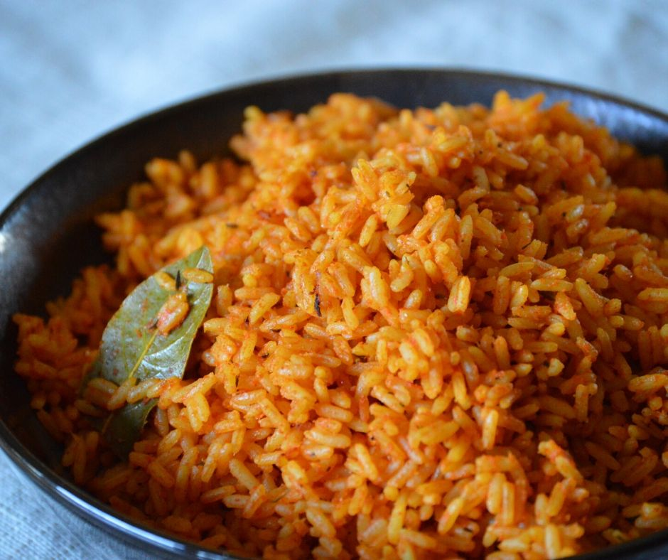

Jollof Rice

Description
Jollof rice is a west african rice dish. Popular in
Nigeria, it is often eaten with protein (chicken, beef, etc.)
and vegetables.
It has a savoury taste, and its red-ish colour comes
from the main ingredient of tomatoes.
Ingredients
- Long grain parboiled rice
- Crushed tomatoes
- Onions
- Bell peppers
- Maggi liquid seasoning
- Salt
- Oil
- Bay leaves
Steps
- Fill a pot with long grain parboiled rice and wash a couple of times
- Fill with water about an inch above the rice level, and set on the stove to boil at medium-high heat
- Blend onions and bell peppers, and add crushed tomatoes to the mix
- Pour the vegetable mixture into a pot, add some oil, and set on medium-high heat. Allow to cook for approx 15 mins. Once it starts bubbling turn the heat off
- Taste the rice for hardness. Add water if needed. If soft, turn off the heat and allow to steam
- Preheat the oven to 400 degrees
- Pour the cooked rice into a large tray and pour the sauce over the rice
- Mix the rice and sauce together until there the colour is consistent and there is no un-sauced white rice
- Add bay leaves
- Put the tray in the oven. Allow to bake for approx 15 minutes, mix and then leave for another 15 minutes
- Remove rice from the oven and pour maggi liquid seasoning in the rice. Mix, taste, and add more if desired
- Serve